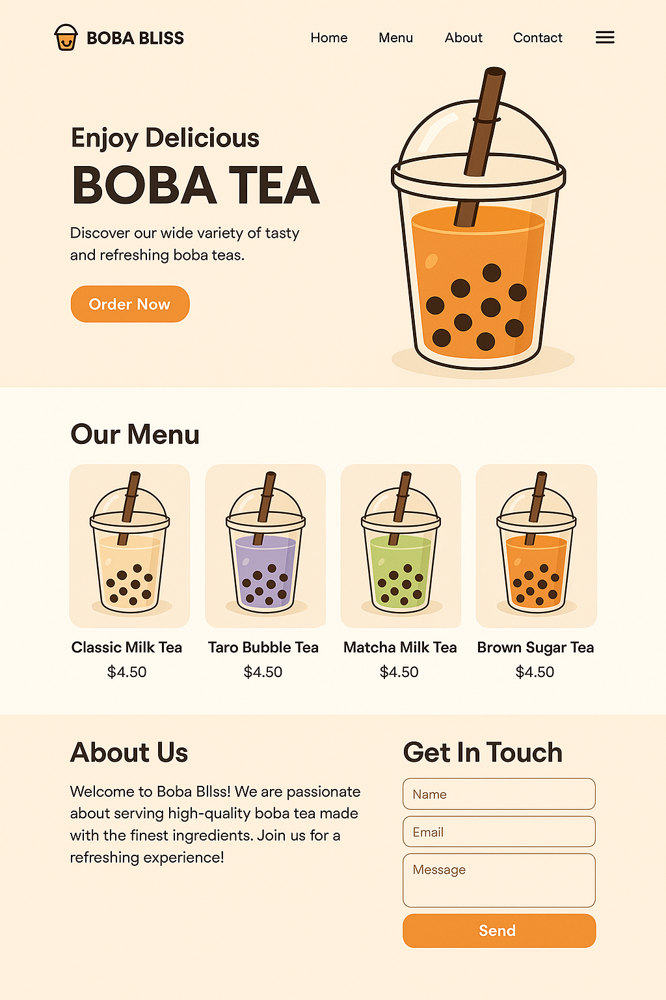

A business website for my future boba business using HTML, CSS, and JavaScript
3 weeks
Individual project
HTML, CSS, JavaScript, Figma, Visual Studio Code

This project involved designing and developing a comprehensive business website for my future boba tea business. The goal was to create an engaging, professional online presence that showcases the brand, menu, and services while providing an excellent user experience for potential customers.
The design focused on creating a warm, inviting atmosphere that reflects the cozy and social nature of boba tea culture. The color scheme and typography were chosen to convey both professionalism and approachability, making the website appealing to a diverse customer base.
The website was built using modern web technologies including HTML5, CSS3, and JavaScript. Special attention was paid to performance optimization and accessibility standards to ensure the site loads quickly and is usable by everyone.
This website serves as a digital storefront for the boba business, helping to:
Planned future features include a loyalty program, mobile app integration, and advanced analytics to better understand customer preferences and behavior patterns.